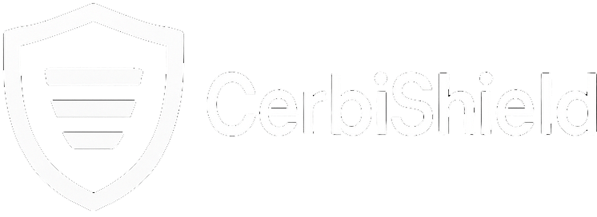
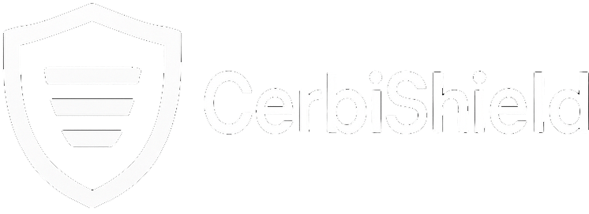

1.Cut Log Spend
Normalize fields, roll up noise, and de-duplicate before indexing.
- Less high-cardinality churn
- Smaller indexes, faster queries
Bring order to log chaos. CerbiSuite enforces structure at the source, enables audit-ready compliance, and feeds ML-ready pipelines—without vendor lock-in.
 



Cerbi.Short, concrete wins you can expect. Each can start small and expand safely across the org.
Normalize fields, roll up noise, and de-duplicate before indexing.
Versioned PII policy + redaction metadata you can hand to Risk/Legal.
Stop breaking charts every sprint due to field drift.
Consistent app/env/tenant/trace IDs → faster triage and MTTR.
Clean, governed features for LLMs & models—without PII surprises.
Start with one domain (e.g., auth), run in relax-mode, then tighten.
A health insurer modernizes a claims platform across 20+ services. Logs are inconsistent and contain PII. Cerbi introduces a governed profile (HIPAA starter + team rules). Developers see IDE diagnostics for forbidden fields; runtime applies redaction and flags violations instead of dropping events. Splunk dashboards stop breaking, audit requests are answered with versioned policy history, and storage costs drop 28% from reduced high-cardinality fields.
THE PROBLEM
As organizations scale across internal squads, contractors, and third-party libraries, logging becomes a patchwork—hard to trust, hard to use, and risky. Cerbi turns logs into governed, reliable data products.
Install from NuGet, configure in Program.cs, and log safely with governance validation.
// 1) Install
dotnet add package CerbiStream
dotnet add package Cerbi.MEL.Governance
dotnet add package CerbiStream.GovernanceAnalyzer
// 2) Configure in Program.cs (MEL)
using CerbiStream;
var logger = LoggerFactory.Create(builder =>
{
builder.AddCerbiStream(options =>
{
options.WithFileFallback();
options.UseGovernance("cerbi_governance.json");
});
}).CreateLogger<Program>();
// 3) Log safely with governance validation
logger.LogInformation("User logged in {@user}", new { UserId = "12345" });
A cohesive suite where each component addresses a critical aspect of enterprise logging.
| Component | Status | Purpose |
|---|---|---|
| CerbiStream | GA | Core .NET logger with structured output, optional encryption, stable shapes. NuGet |
| GovernanceAnalyzer | GA | Roslyn analyzer flags governance issues during build (IDE/CI). Reads project profiles. |
| MEL.Governance | GA | Runtime validator for Microsoft.Extensions.Logging; redact/flag with relax-mode. |
| CerbiShield | Beta | Governance dashboard & APIs — profile authoring, RBAC, audit history, versioning. |
| CerbIQ | Planned | Routing, normalization, rollups, fan-out, app grouping into analytics-ready datasets. |
| CerbiSense | Planned | ML anomaly detection & forecasting on governed logs, with explainability. |
Keep Serilog/NLog/MEL—add Cerbi governance today. Or go all-in with CerbiStream. Either way, the same governance profiles power build-time diagnostics and runtime enforcement.
Roslyn analyzer flags violations in IDE/CI with precise messages—before code ships.
Validators ensure emitted logs comply with your profiles. Redaction & relax-mode keep visibility while preventing leaks.
HIPAA/GDPR-aligned defaults you can tailor; versioned profiles; audit histories; rule plugins.
This demo mirrors Cerbi’s behavior: keep the event, redact sensitive values, and tag violations with metadata for downstream scoring and audit.


Cerbi governs telemetry at the source and plays nicely with your existing loggers, sinks, and BI tools.
CerbiStream.GovernanceAnalyzer adds IDE/CI diagnostics.Cerbi.MEL.Governance enforces redaction/flagging, honors Relax().IEncryption; file-fallback with rotation.
builder.AddCerbiStream() adds structured output + governance.Bottom line: familiar tools; cost control, auditability, faster incident response.
| Package | Link | What you get |
|---|---|---|
| CerbiStream | NuGet → | Core structured logger for .NET; stable shapes, correlation IDs, optional encryption; file fallback with rotation. |
| Cerbi.MEL.Governance | NuGet → | Runtime governance validator for Microsoft.Extensions.Logging; redact & flag, supports relax-mode for gradual rollout. |
| CerbiStream.GovernanceAnalyzer | NuGet → | Roslyn analyzer diagnostics for schema/PII before merge; integrates with CI; points to exact fields & fixes. |
| Cerbi.Governance.Runtime | NuGet → | Shared runtime primitives for governance operations and profile evaluation. |
| Cerbi.Governance.Core | NuGet → | Core model & policy types; JSON profile contracts; extensibility points for rules. |
| Cerbi.Serilog.GovernanceAnalyzer | NuGet → | Analyzer for Serilog projects; same governance profile language to keep consistency across teams. |
| Repository | Link | Description |
|---|---|---|
| Cerbi-CerbiStream | GitHub → | Reference implementation of the structured logger with samples. |
| CerbiStream.BenchmarkTests | GitHub → | Benchmarks for throughput/allocations across scenarios and payload sizes. |
| Cerbi.MEL.Governance | GitHub → | Runtime validator package for MEL pipelines; redaction, relax-mode, and metadata tagging. |
| Cerbi.MEL.Governance.Demo | GitHub → | Demo app for validation behavior and policy experiments. |
| Cerbi.Serilog.GovernanceAnalyzer | GitHub → | Analyzer for Serilog projects that aligns with MEL governance rules. |
| Cerbi.Serilog.GovernanceAnalysizer.TestApp | GitHub → | Serilog analyzer test harness and rule demonstrations. |
| Approach | Pros | Cons | Best when… |
|---|---|---|---|
| “Just log more” | Fast to start | Inconsistent fields, PII risk, higher cost | Tiny apps, prototypes |
| Downstream normalization | No app changes | Late fixes, fragile | Short-term stopgap |
| Cerbi governance | Stable schema, redaction, versioned policy | Define profiles; add analyzers/validators | Multi-team apps, compliance |
Questions, enterprise inquiries, or marketplace partnership? Reach out and we’ll respond quickly.
Prefer email? hello@cerbi.io
By submitting, you agree to our Terms and acknowledge our Privacy Policy.